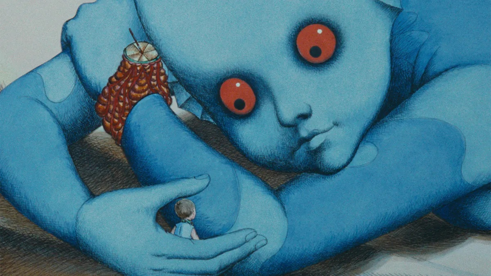
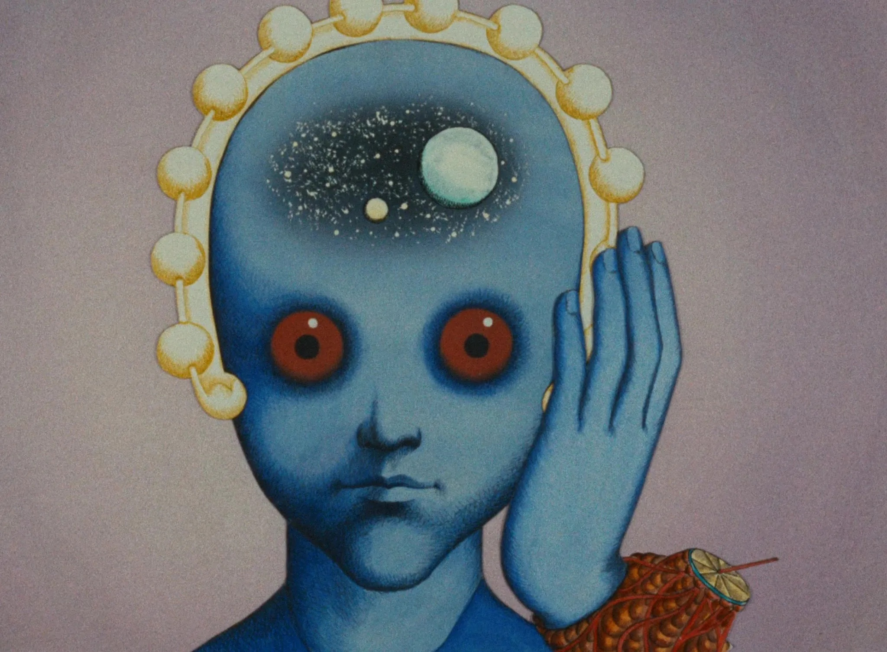
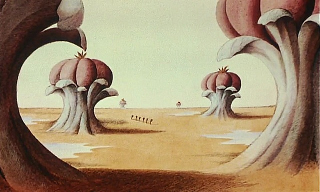
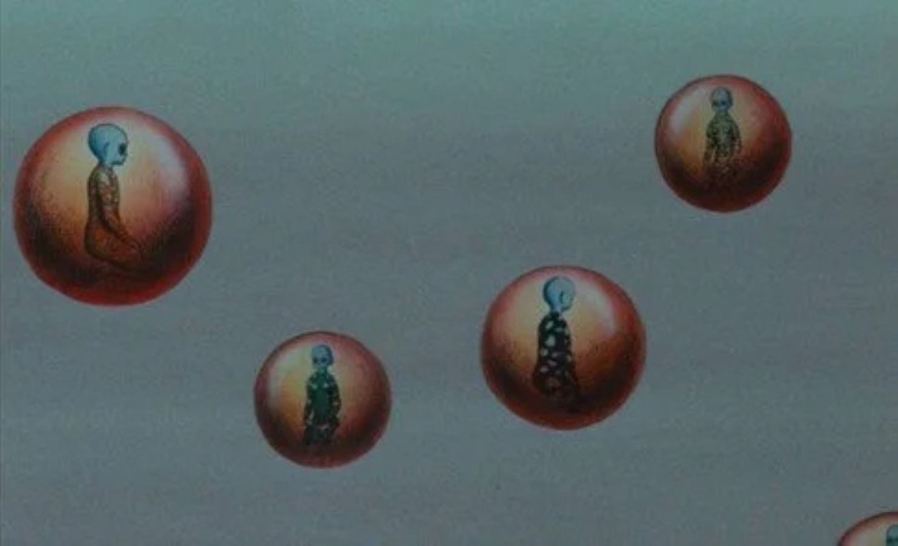

The film, in plain words
Fantastic Planet is a 1973 French animated film by René Laloux. The animation looks like a medieval engraving rendered in lurid colour: every frame is unsettling, and everything moves slowly. The plot, told plainly: a planet ruled by enormous blue beings called Draags, who tower over tiny humans called Oms. The Draags consider Oms vermin, and in some cases pets. The film follows a young Om called Terr who is raised inside a Draag household and accidentally learns something he was never meant to know.
It is also, fifty-three years later, the best film ever made about phones.
Stay with us. The film is really about the gap between having access to knowledge and being able to use your mind. That gap is the most important thing in your life right now and almost nobody is talking about it honestly.
— You need technology to escape being treated like a pet.
— You need silence to stop the technology turning you into one anyway.
This piece is about that double bind. And about why the most powerful beings in the film — the Draags themselves — voluntarily take the headsets off.
1. The headset is liberation. Steal it.

In Fantastic Planet, the Draags learn everything through wearable headsets - domed devices that pour knowledge straight into the brain. Schools, libraries, history, philosophy, every subject any Draag has ever studied - all of it, instantly, through the headset.
The Oms don't have headsets. They are not allowed them. The Draags consider Oms too stupid to use one. The Draags are wrong, but it doesn't matter - they control the hardware.
Then Terr - the protagonist, a captive Om raised inside a Draag family - steals a headset. He hides it. He uses it in secret. He learns reading, history, mathematics, biology, the geometry of the Draag mind itself. He brings it back to the wild Oms. They learn too. Within months they are no longer cattle. They are a civilisation.
This is the iconic move of the film, and it's the entire history of the printing press, the radio, the photocopier, the internet, and the smartphone in one image. Whenever the people in charge hoard the means of knowing, somebody steals the device. The whole shape of history changes after that.
In 2026, the headset is a £150 second-hand phone with open-source AI, free Wikipedia, free Khan Academy, free YouTube, free everything. It is the most powerful object a young person has ever held. Used well, it lets you:
- Learn anything, in any language, for free.
- Bypass gatekeepers who would have decided your career, your education, your access for you.
- Talk to people in any country, in their language or yours.
- Notice when you are being lied to.
- Build a portfolio, a business, a louder version of yourself.
If you don't have a phone, you are at a real disadvantage. Ignorance is what makes you a target. Information is what makes you a peer.
That's the first half of the film. The Oms are right to steal the headset. So are you. Don't apologise for using the phone, the AI, the search bar, the auto-translate. They were never meant for you - that's exactly why you have to take them.
2. The trap nobody warned the Oms about

Now the bit no one warned the Oms about.
When Terr brings the headset back to the wild Om colony, they live near a stream, in cliff dwellings, in the open air. They have a culture. They have rituals. They have time. After the headset arrives, they spend most of their day plugged in.
This is presented in the film as a victory and the film does not interrogate it. We have to. Because if you watch the wild Oms after the headset, they are tense. They are constantly consuming. They never stop learning, because they cannot stop learning, because the moment they take the headset off they remember the Draags are still out there and somebody has to do something about it.
This is you. This is us. This is everyone right now.
We have the sum of every library humanity has ever built in our pockets. We have working models of every mind that has ever published, and we can ask any question and get a reasonable answer in three seconds.
And we feel like idiots.
We have never been more distracted. Sleep is worse. Attention is worse. Memory - actual, holding-an-idea-in-your-head-while-you-walk-down-the-street memory - is worse. We mistake scrolling for learning. We mistake notifications for events. We mistake a friend's Story for a friend.
You don't think of yourself that way. Nobody does. But check, properly: how many of your most-held opinions came from someone you've never met saying something to a camera in their bedroom in another country? How many of those opinions did you arrive at by thinking?
This is the trap. Liberation by headset is real. So is the trap. Both things are true. Holding both at once is the whole point of the rest of this piece.
3. The Draag secret — why the masters meditate

Here's the part the Oms don't see for most of the film.
The Draags - the gigantic blue beings, the ones at the top of the food chain - do not wear their headsets at the highest level of their civilisation. They use them at school. They use them for input. But the truly powerful Draags, the ones who run the planet, the ones who shape the species, they sit, eyes closed, inside floating spheres. They meditate. They go into a state the film calls cosmic meditation and they leave the planet, in their minds, to do something the film never fully explains but which is clearly the source of all their power.
This is the most important shot in the film and it is easy to miss. The Draags use the headset to learn. They use silence to be.
Think about what that means.
The smartest beings on the planet in Fantastic Planet know that input alone makes you a clever pet. They know that information is the raw material, but information is not thinking. To turn information into power, you have to take the headset off and process. You have to be alone with your own brain. You have to risk being bored. You have to let an idea sit there - not be useful, not be a thread, not be a post, just sit.
You don't have to call this meditation. You can call it walking. You can call it staring out of the bus window. You can call it being in the bath. You can call it cooking, drawing, lifting weights, swimming, drumming, journalling, sketching, looking at trees, lying on the floor, waiting at a bus stop without your phone out.
It is the same move the Draags make. You take the device off. You let your mind do the thing it was actually built to do - which isn't to receive, but to combine.
The Draags are not better than the Oms because they have more knowledge. They have roughly the same knowledge by the end of the film. The Draags are better because they know when to stop consuming and start thinking.
4. Be a liberated Om with the mind of a Draag
By the end of Fantastic Planet, the Oms have effectively achieved peace with the Draags. They have access. They have a place. They have stopped being pets.
But to actually live in this peace, the Oms have to do something else. They have to stop simply mirroring the Draags' knowledge and start having their own ideas, their own civilisation, their own purpose. The film ends, more or less, at this threshold, and it deliberately doesn't show you what comes next, because that part is up to whoever is watching.
So:
Be an Om. Steal the headset. Use the phone. Use the AI. Learn whatever you want. Refuse to be a pet of any institution that wants you ignorant. Refuse to be a target. Take the access. It is yours by right and the people who pretend otherwise are doing it because it is profitable for them.
Then be a Draag. Put the device down. Sit somewhere quiet. Let an idea move through you without immediately googling it. Let a feeling come up without immediately scrolling to bury it. Let an hour pass with nothing in your ears. Let your brain catch up to the river of input you've been pouring into it.
The goal isn't to become a Draag. They are still alien, still cold, still distant in the film. The goal is to be yourself - without a leash on. To think freely. To know when to download and when to disconnect.
That's it. That's the whole thing. A 1973 French cartoon about blue giants told you the answer fifty years before the iPhone existed.
Watch the film. Watch it on your phone if you have to. Then put the phone down.
More like this
SAFE's Story Intelligence project collects what young people are actually living through, in their own words. Read it. Or add yours.
Explore SAFE Intelligence →